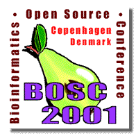

|  |
Registering for BOSC2001
ISMB is handling the registration for BOSC and BioPathways.
The ISMB secure registration
form will permit you to register for ISMB as well as BOSC and
BioPathways.
Please note that you do not have to register for ISMB in order to
register for BOSC/BioPathways--you can use the ISMB registration form to register for
BOSC/BioPathways alone if you choose.
Also, although it may appear otherwise on the ISMB form, you only need to
pay once to attend both BOSC and BioPathways. When
registering, please
select the meeting of primary interest to you, but you may attend
both for no extra charge.
| |||||||